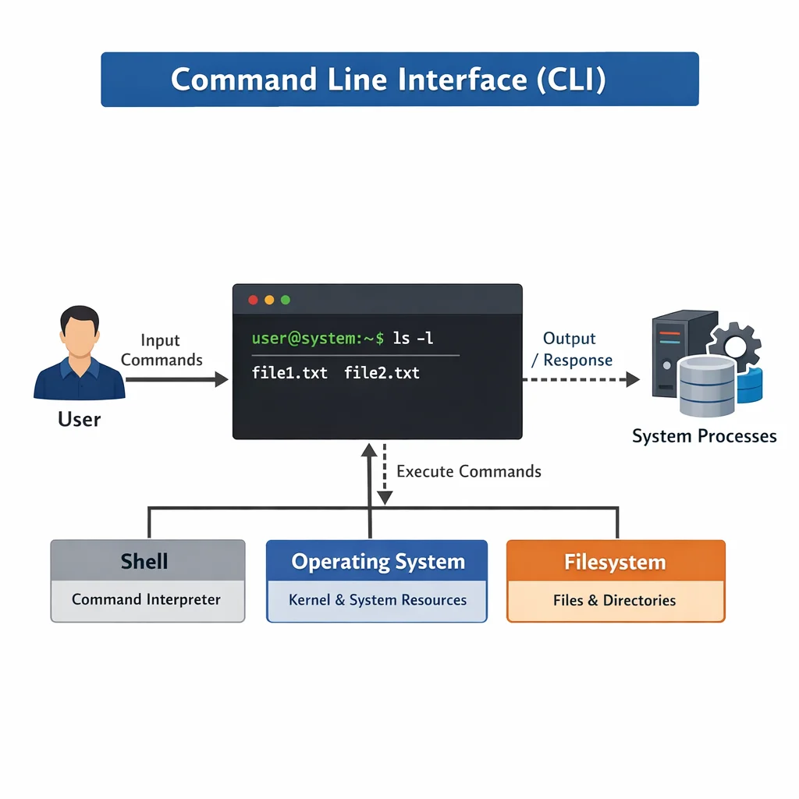
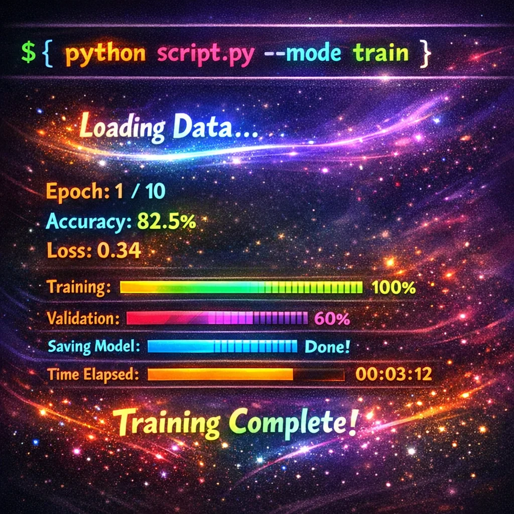

Framework Components

Project Structure
Defined patterns for commands, libraries, and test organization.

Quality Standards
Comprehensive testing strategy with coverage targets and CI/CD integration.

Developer Experience
Automated linting, formatting, and build processes for rapid iteration.